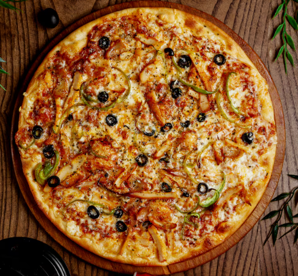

Chicken Pizza with Bell Pepper and Olives

Ingredients
- 1 Pizza Dough Ready-made or homemade
- 200g Cooked Chicken Breast Shredded
- 1/2 Cup Bell Peppers Sliced
- 1/4 Cup Black Olives Sliced
- 1/2 Cup Mozzarella Cheese Shredded
- 1/4 Cup Tomato Sauce
- 1 tsp Olive Oil
- 1/2 tsp Oregano
- 1/4 tsp Black Pepper
- 1/2 tsp Red Chili Flakes Optional
- Fresh Basil Leaves For garnish
Steps
- Prepare the Dough: Preheat the oven to 220°C (425°F). Roll out the pizza dough onto a greased baking tray or pizza stone.
- Prepare the Sauce: Spread a thin layer of tomato sauce over the rolled-out dough.
- Add Chicken: Distribute the shredded cooked chicken evenly over the sauce.
- Top with Vegetables: Add the sliced bell peppers and black olives on top of the chicken.
- Add Cheese and Season: Sprinkle shredded mozzarella cheese over the toppings. Add oregano, black pepper, and red chili flakes (optional).
- Bake the Pizza: Drizzle a little olive oil on top and bake in the preheated oven for 10-12 minutes, or until the crust is golden and the cheese has melted.
- Garnish and Serve: Once baked, remove the pizza from the oven and garnish with fresh basil leaves. Serve hot!